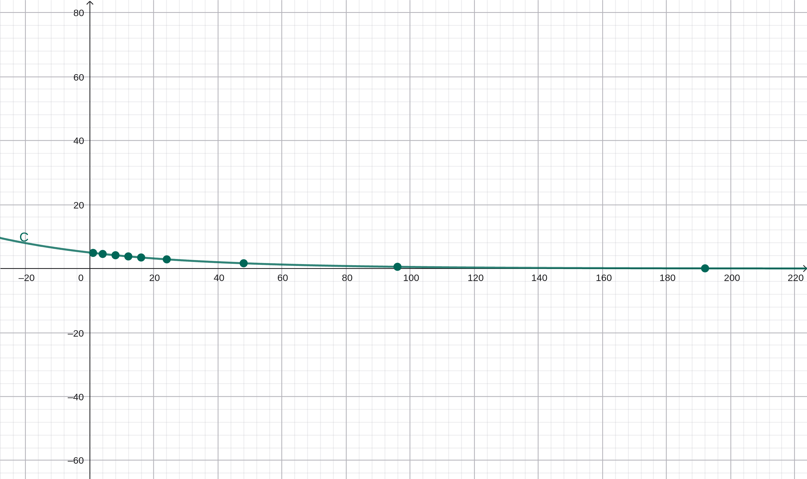

Decaimiento exponencial y vida media de un medicamento

En la asignatura de matemática desarrollamos un análisis del comportamiento de un medicamento en el organismo utilizando el modelo de decaimiento exponencial. Se tomó como referencia una dosis inicial de 5 mg de clorpromazina, considerando una vida media promedio de 30 horas.
El modelo aplicado fue: C(t) = C₀ (1/2)t/h, fórmula que permite calcular la cantidad restante del medicamento en función del tiempo.
Los cálculos realizados demostraron que la concentración disminuye de manera proporcional y progresiva. Mientras en las primeras horas se conserva más del 90 % de la sustancia, con el paso de los días el porcentaje se reduce hasta valores mínimos.
Este comportamiento confirma la naturaleza exponencial del proceso y evidencia cómo la matemática permite interpretar científicamente fenómenos farmacológicos relacionados con la eliminación de medicamentos en el cuerpo humano.